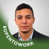

<!doctype html>
<html lang="es">
<head>
  <meta charset="utf-8">
  <meta name="viewport" content="width=device-width, initial-scale=1">
  <meta name="theme-color" content="#0b1024">
  <title>Servicios TI y Analítica</title>
  <link rel="icon" type="image/svg+xml" href="data:image/svg+xml,%3Csvg xmlns='http://www.w3.org/2000/svg' viewBox='0 0 64 64'%3E%3Crect width='64' height='64' rx='16' fill='%236d4aff'/%3E%3Cpath d='M18 20h28v7H18zm0 12h20v7H18zm0 12h28v7H18z' fill='white'/%3E%3C/svg%3E">
  <style>
    :root{--ink:#f7f7ff;--muted:#bec2de;--violet:#8b6cff;--aqua:#5ae6dc;--rose:#ff91b7;--bg:#0b1024;--panel:rgba(18,25,57,.65)}
    body.light{--ink:#18213c;--muted:#52617c;--violet:#6854d8;--aqua:#087e83;--rose:#ca557d;--bg:#f3f6fb;--panel:rgba(255,255,255,.76)}body.light .ambient{background:radial-gradient(circle at 15% 15%,rgba(117,95,238,.20),transparent 30%),radial-gradient(circle at 82% 76%,rgba(22,169,166,.16),transparent 28%),linear-gradient(135deg,#fbfcff 0%,#eef2ff 53%,#e8f7f7 100%)}body.light .ambient:before,body.light .ambient:after{opacity:.28}body.light .rail{border-color:rgba(24,33,60,.12);background:rgba(255,255,255,.48)}body.light .rail small{color:#697590}body.light .stage:before{opacity:.36;background-image:linear-gradient(rgba(8,126,131,.13) 1px,transparent 1px),linear-gradient(90deg,rgba(8,126,131,.13) 1px,transparent 1px)}body.light .card,body.light .person,body.light .project .detail{background:linear-gradient(135deg,rgba(255,255,255,.9),rgba(239,244,255,.66));border-color:rgba(33,45,78,.13);box-shadow:0 12px 35px rgba(32,47,89,.08)}body.light .visual{border-color:rgba(33,45,78,.15);background:linear-gradient(145deg,rgba(104,84,216,.16),rgba(8,126,131,.10))}body.light .visual .stat{background:linear-gradient(130deg,#273357,#087e83);-webkit-background-clip:text;color:transparent}body.light .step span{color:#273352}body.light .tag{color:#273352;background:rgba(255,255,255,.64);border-color:rgba(33,45,78,.15)}body.light .footer{border-color:rgba(24,33,60,.12);background:rgba(255,255,255,.58)}body.light .counter,body.light .hint{color:#58647e}body.light .controls button{color:#273352;border-color:rgba(33,45,78,.18);background:rgba(255,255,255,.65)}body.light .controls button:hover{color:white;background:var(--violet)}body.light .cover-art{mix-blend-mode:normal;opacity:.38}
    *{box-sizing:border-box} body{margin:0;min-height:100vh;background:var(--bg);color:var(--ink);font-family:Inter,ui-sans-serif,system-ui,-apple-system,BlinkMacSystemFont,"Segoe UI",sans-serif;overflow:hidden}
    .ambient,.ambient:before,.ambient:after{position:fixed;inset:0;pointer-events:none}.ambient{background:radial-gradient(circle at 15% 15%,rgba(112,79,255,.32),transparent 28%),radial-gradient(circle at 82% 76%,rgba(34,212,194,.2),transparent 26%),linear-gradient(135deg,#090d21 0%,#14113a 54%,#081b2c 100%)}.ambient:before,.ambient:after{content:"";filter:blur(55px);opacity:.8;animation:float 16s ease-in-out infinite}.ambient:before{inset:auto;left:-10vw;top:56vh;width:44vw;height:44vw;background:#6d4aff;border-radius:50%}.ambient:after{inset:auto;right:-10vw;top:-12vh;width:42vw;height:42vw;background:#20b9c8;border-radius:50%;animation-delay:-8s}@keyframes float{50%{transform:translate(8vw,-6vh) scale(1.17)}}
    .shell{position:relative;z-index:1;display:grid;grid-template-columns:80px minmax(0,1fr);height:100vh}.rail{border-right:1px solid rgba(255,255,255,.1);padding:28px 0;display:flex;flex-direction:column;align-items:center;gap:16px;background:rgba(7,10,28,.35);backdrop-filter:blur(18px)}.mark{width:38px;height:38px;border-radius:13px;background:linear-gradient(135deg,var(--violet),var(--aqua));display:grid;place-items:center;font-weight:900;color:#10132b;box-shadow:0 10px 30px rgba(87,72,255,.45);text-decoration:none;transition:transform .2s}.mark:hover{transform:translateY(-2px) rotate(-6deg)}.theme-toggle{width:34px;height:34px;border:1px solid rgba(255,255,255,.18);border-radius:10px;background:rgba(255,255,255,.08);color:var(--ink);font-size:1.05rem;line-height:1;cursor:pointer;transition:transform .2s,background .2s}.theme-toggle:hover{transform:translateY(-2px) rotate(-10deg);background:rgba(255,255,255,.18)}body.light .theme-toggle{border-color:rgba(33,45,78,.18);background:rgba(255,255,255,.65)}.dots{display:grid;gap:9px;margin-top:18px}.dot{width:7px;height:7px;border:0;border-radius:50%;background:#626985;padding:0;cursor:pointer;transition:.25s}.dot.active{height:25px;border-radius:8px;background:var(--aqua);box-shadow:0 0 16px var(--aqua)}.rail small{writing-mode:vertical-rl;transform:rotate(180deg);color:#8f94b2;letter-spacing:.16em;font-size:.58rem;margin-top:auto}
    main{min-width:0;display:grid;grid-template-rows:1fr auto}.stage{position:relative;display:flex;align-items:center;justify-content:center;padding:clamp(28px,6vw,92px);overflow:auto;isolation:isolate}.stage:before{content:"";position:absolute;inset:0;pointer-events:none;z-index:-1;opacity:.26;background-image:linear-gradient(rgba(110,234,224,.10) 1px,transparent 1px),linear-gradient(90deg,rgba(110,234,224,.10) 1px,transparent 1px);background-size:42px 42px;mask-image:radial-gradient(ellipse at center,black,transparent 76%);animation:gridDrift 15s linear infinite}@keyframes gridDrift{to{background-position:42px 42px}}.slide{display:none;width:min(1120px,100%);min-height:min(620px,76vh)}.slide.active{display:flex;flex-direction:column;justify-content:center}.slide.enter-forward{animation:techInRight .68s cubic-bezier(.16,.8,.22,1) both}.slide.enter-back{animation:techInLeft .68s cubic-bezier(.16,.8,.22,1) both}@keyframes techInRight{0%{opacity:0;transform:translateX(68px) scale(.97);filter:blur(9px)}62%{opacity:1;filter:blur(0)}100%{transform:none}}@keyframes techInLeft{0%{opacity:0;transform:translateX(-68px) scale(.97);filter:blur(9px)}62%{opacity:1;filter:blur(0)}100%{transform:none}}.transition-flash{position:absolute;inset:0;z-index:4;pointer-events:none;overflow:hidden}.transition-flash:before{content:"";position:absolute;inset:-15%;background:linear-gradient(105deg,transparent 38%,rgba(107,250,239,.04) 44%,rgba(255,255,255,.86) 50%,rgba(139,108,255,.16) 56%,transparent 62%);transform:translateX(-120%);animation:dataSweep .58s cubic-bezier(.2,.7,.2,1) both}.transition-flash:after{content:"";position:absolute;inset:0;border:1px solid rgba(90,230,220,.35);box-shadow:inset 0 0 42px rgba(90,230,220,.15);opacity:0;animation:pulseFrame .58s ease-out both}@keyframes dataSweep{to{transform:translateX(120%)}}@keyframes pulseFrame{25%{opacity:1}100%{opacity:0}}.eyebrow{font-size:.74rem;letter-spacing:.17em;text-transform:uppercase;color:var(--aqua);font-weight:800;margin-bottom:24px}.eyebrow:before{content:"";display:inline-block;width:9px;height:9px;border-radius:50%;background:var(--violet);margin-right:12px;box-shadow:0 0 16px var(--violet);animation:statusBlink 2s ease-in-out infinite}@keyframes statusBlink{50%{opacity:.38;transform:scale(.72)}}.title{max-width:950px;font-size:clamp(2.65rem,6.2vw,6.6rem);line-height:.98;letter-spacing:-.06em;margin:0 0 24px}.lead{font-size:clamp(1.05rem,1.55vw,1.38rem);line-height:1.5;color:var(--muted);max-width:760px;margin:0}.accent{color:var(--aqua)}
    .cover{position:relative;min-height:640px!important;align-items:center!important}.cover .content{position:relative;z-index:2;text-align:center;max-width:820px;margin:0 auto}.cover .title{font-size:clamp(2.65rem,5.8vw,5.75rem)}.cover .lead{margin-inline:auto}.cover .eyebrow{margin-bottom:18px}.cover .card-fan{position:absolute;left:50%;bottom:0;transform:translateX(-50%);width:min(880px,86vw);height:310px;z-index:1;perspective:1100px}.fan-card{position:absolute;bottom:0;width:180px;height:238px;padding:13px;border:0;border-radius:18px;background:#fff;box-shadow:0 22px 38px rgba(0,0,0,.3);overflow:hidden;cursor:pointer;transform-origin:50% 115%;transition:transform .45s cubic-bezier(.2,.8,.2,1),box-shadow .3s;animation:fanIn .75s cubic-bezier(.16,.8,.22,1) both}.fan-card:after{content:"";position:absolute;inset:0;background:linear-gradient(150deg,rgba(255,255,255,.20),transparent 35%,rgba(7,10,32,.2));pointer-events:none}.fan-card img{width:100%;height:100%;border-radius:10px;object-fit:cover;display:block}.fan-card span{position:absolute;left:24px;bottom:25px;z-index:1;color:white;text-align:left;font-size:.74rem;font-weight:800;letter-spacing:.06em;text-transform:uppercase;text-shadow:0 2px 8px #0b1024}.fan-card:nth-child(1){left:5%;transform:rotate(-20deg) translateY(30px);animation-delay:.08s}.fan-card:nth-child(2){left:23%;transform:rotate(-10deg) translateY(10px);animation-delay:.15s}.fan-card:nth-child(3){left:41%;transform:translateY(-7px);animation-delay:.22s}.fan-card:nth-child(4){left:59%;transform:rotate(10deg) translateY(10px);animation-delay:.29s}.fan-card:nth-child(5){left:77%;transform:rotate(20deg) translateY(30px);animation-delay:.36s}.fan-card:hover{z-index:10;transform:translateY(-48px) rotate(0deg)!important;box-shadow:0 32px 54px rgba(0,0,0,.44)}@keyframes fanIn{from{opacity:0;filter:blur(9px);margin-bottom:-80px}to{opacity:1;filter:blur(0);margin-bottom:0}}.tag{display:inline-flex;align-items:center;gap:10px;margin-top:30px;border:1px solid rgba(255,255,255,.17);border-radius:999px;padding:12px 17px;color:#e8e8ff;background:rgba(255,255,255,.05);font-size:.9rem}.tag i{display:block;width:8px;height:8px;background:var(--aqua);border-radius:50%}
    .grid{display:grid;grid-template-columns:repeat(2,minmax(0,1fr));gap:18px;margin-top:38px}.card{padding:26px 28px;border:1px solid rgba(255,255,255,.13);border-radius:22px;background:linear-gradient(135deg,rgba(255,255,255,.1),rgba(255,255,255,.035));box-shadow:0 12px 38px rgba(0,0,0,.12);min-height:152px}.num{font-size:.78rem;color:var(--aqua);font-weight:800;letter-spacing:.1em}.card h3{margin:17px 0 9px;font-size:1.35rem;letter-spacing:-.025em}.card p{margin:0;color:var(--muted);font-size:1rem;line-height:1.45}.split{display:grid;grid-template-columns:1.08fr .92fr;gap:50px;align-items:center}.visual{border:1px solid rgba(255,255,255,.15);border-radius:30px;background:linear-gradient(145deg,rgba(140,108,255,.23),rgba(90,230,220,.11));min-height:410px;padding:36px;display:flex;align-items:center;justify-content:center}.visual .stat{font-size:clamp(4rem,10vw,8rem);font-weight:900;letter-spacing:-.1em;background:linear-gradient(130deg,#fff,#80efe7);-webkit-background-clip:text;color:transparent}.visual p{text-align:center;color:var(--muted);max-width:230px}.steps{display:grid;gap:13px;margin-top:32px}.step{display:grid;grid-template-columns:42px 1fr;gap:16px;align-items:center}.step b{width:42px;height:42px;border-radius:14px;display:grid;place-items:center;background:rgba(91,230,220,.16);color:var(--aqua)}.step span{color:#e9eaff;font-size:1.1rem}.team{display:grid;grid-template-columns:repeat(3,minmax(0,1fr));gap:24px;margin-top:34px}.person{padding:22px;border-radius:26px;border:1px solid rgba(255,255,255,.12);background:rgba(255,255,255,.055)}.person img{width:100%;aspect-ratio:1/1;object-fit:cover;object-position:center 27%;border-radius:18px;filter:saturate(.98) contrast(1.03);box-shadow:0 16px 38px rgba(0,0,0,.28)}.person h3{font-size:1.35rem;margin:17px 0 5px}.person p{color:var(--aqua);margin:0}.project{display:grid;grid-template-columns:1fr 1fr;gap:30px;align-items:center}.project img{max-width:100%;max-height:430px;object-fit:contain;border-radius:20px;box-shadow:0 20px 55px rgba(0,0,0,.3)}.project .detail{padding:34px;border-radius:28px;background:rgba(255,255,255,.07);border:1px solid rgba(255,255,255,.12)}.project .detail h2{font-size:2.5rem;line-height:1.02;letter-spacing:-.05em;margin:0 0 20px}.project .detail p{color:var(--muted);line-height:1.55}.quote{font-size:clamp(2rem,4vw,4.4rem);line-height:1.03;letter-spacing:-.055em;max-width:920px}.quote strong{color:var(--aqua)}
    .footer{display:flex;justify-content:space-between;align-items:center;padding:20px clamp(22px,4vw,54px);border-top:1px solid rgba(255,255,255,.1);background:rgba(5,8,24,.3);backdrop-filter:blur(18px)}.counter{font-variant-numeric:tabular-nums;color:#aeb2cb;font-size:.9rem}.controls{display:flex;gap:10px}.controls button{min-width:48px;height:42px;border:1px solid rgba(255,255,255,.16);border-radius:14px;background:rgba(255,255,255,.08);color:white;font-size:1.2rem;cursor:pointer;transition:.2s}.controls button:hover{background:var(--violet);transform:translateY(-2px)}.hint{color:#a8adc5;font-size:.83rem}
    @media(max-width:900px){body{overflow:auto}.shell{display:block;height:auto;min-height:100vh}.rail{position:fixed;z-index:5;bottom:0;left:0;right:0;height:58px;border-top:1px solid rgba(255,255,255,.12);border-right:0;padding:0 18px;flex-direction:row;justify-content:space-between}.dots{display:flex;margin:0;gap:7px}.dot.active{width:22px;height:7px}.rail small{display:none}.stage{padding:54px 22px 92px;min-height:calc(100vh - 58px)}.slide{min-height:auto}.title{font-size:clamp(2.65rem,13vw,4.4rem)}.cover{min-height:650px!important}.cover .card-fan{height:245px;width:110vw;bottom:20px}.fan-card{width:120px;height:160px;padding:8px;border-radius:13px}.fan-card span{left:14px;bottom:15px;font-size:.55rem}.fan-card:nth-child(1){left:2%}.fan-card:nth-child(2){left:20%}.fan-card:nth-child(3){left:38%}.fan-card:nth-child(4){left:56%}.fan-card:nth-child(5){left:74%}.grid,.team,.split,.project{grid-template-columns:1fr}.card{min-height:auto}.visual{min-height:200px}.footer{position:fixed;left:0;right:0;bottom:58px;z-index:4;padding:10px 20px}.hint{display:none}.slide.active{padding-bottom:50px}}
  </style>
</head>
<body>
<div class="ambient"></div>
<div class="shell">
  <aside class="rail" aria-label="Navegación de diapositivas"><a class="mark" href="redes.html" aria-label="Ver redes sociales">N</a><button class="theme-toggle" id="theme-toggle" aria-label="Cambiar a tema claro" title="Cambiar tema">☾</button><div class="dots" id="dots"></div><small>SERVICIOS TI · CALI</small></aside>
  <main><section class="stage" id="stage" aria-live="polite"></section><footer class="footer"><span class="counter" id="counter"></span><span class="hint">Usa ← →, espacio o los controles</span><div class="controls"><button id="previous" aria-label="Diapositiva anterior">←</button><button id="next" aria-label="Diapositiva siguiente">→</button></div></footer></main>
</div>
<script>
const slides=[
{type:'cover',eye:'Propuesta de servicios · Cali, Colombia',title:'Tecnología que ordena <span class="accent">la operación.</span>',lead:'Desarrollo, automatización, seguridad y analítica para empresas que necesitan resolver procesos con claridad.',tag:'Nombre de empresa por definir'},
{eye:'La oportunidad',title:'Procesos claros.<br>Decisiones más oportunas.',lead:'Trabajamos con empresas que necesitan reducir tareas manuales, conectar información y dar visibilidad a su operación.',cards:[['01','Tiempo','Tareas manuales que consumen capacidad del equipo.'],['02','Visibilidad','Información dispersa y reportes tardíos.'],['03','Evolución','Sistemas que requieren mejoras o integración.'],['04','Acompañamiento','Necesidades técnicas sin un equipo interno especializado.']]},
{eye:'Propuesta de valor',title:'Una necesidad puntual.<br><span class="accent">Una solución utilizable.</span>',lead:'Un equipo complementario para diagnosticar, implementar y acompañar cada iniciativa.',steps:['Entendemos el proceso y las prioridades del cliente.','Definimos alcance, responsables y entregables.','Construimos, probamos y documentamos la solución.','Medimos el uso y acordamos los siguientes ajustes.']},
{eye:'Portafolio',title:'Servicios conectados<br>con la operación.',lead:'Cada servicio puede funcionar de manera independiente o integrarse en una solución completa.',cards:[['01','Desarrollo de software','Aplicaciones a medida, mejoras y mantenimiento.'],['02','Automatización e integración','Flujos de trabajo y conexión entre sistemas mediante APIs.'],['03','Analítica de datos','Información preparada, reportes e indicadores de gestión.'],['04','Calidad y acompañamiento','Pruebas, documentación y soporte sobre las soluciones.']]},
{eye:'Ejemplos de soluciones',title:'Lo que podemos<br><span class="accent">desarrollar.</span>',lead:'Ejemplos basados en las experiencias y habilidades del equipo. El alcance se adapta a cada cliente.',cards:[['01','Portal de capacitación corporativa','Campus virtual con contenidos, roles y seguimiento.'],['02','Automatización documental','Extraer datos de PDF o ZIP y revisar el resultado en Excel.'],['03','Integraciones y pagos seguros','Conectar plataformas con APIs y controles de seguridad.'],['04','Analítica de operación','Indicadores y reportes para revisar la operación.']]},
{eye:'Dinámica empresarial',title:'Generar valor implica<br><span class="accent">mejorar una operación.</span>',lead:'El trabajo técnico aporta cuando resuelve una necesidad concreta y permite al cliente usar una solución sostenible.',steps:['Identificar el proceso prioritario, sus responsables y datos disponibles.','Construir un entregable con alcance definido.','Medir uso, errores, tiempos o indicadores.']},
{eye:'Viabilidad y control',title:'Utilidad técnica<br>y viabilidad financiera.',lead:'Las habilidades del equipo se complementan con planeación, control de recursos y seguimiento de resultados.',cards:[['01','Capacidad','Estimar tiempo, especialidades requeridas y disponibilidad real.'],['02','Costos e ingresos','Revisar recursos, licencias, nube, soporte y forma de contratación.'],['03','Control','Registrar horas, alcance, gastos, entregables y resultados.'],['04','Evaluación','Revisar cada proyecto antes de ampliar su alcance.']]},
{eye:'Forma de trabajo',title:'Un proceso que<br>mantiene el foco.',lead:'La propuesta se construye junto al cliente y se revisa en cada etapa.',steps:['Diagnóstico: entender el problema y los datos disponibles.','Propuesta: definir entregables y criterios de aceptación.','Implementación: desarrollar, probar y documentar.','Seguimiento: acompañar el uso y priorizar mejoras.']},
{eye:'Modelo de operación',title:'Un modelo comercial<br><span class="accent">en evaluación.</span>',lead:'La forma de contratación se está evaluando para encontrar el mejor ajuste para cada tipo de cliente.',cards:[['01','Servicios por proyecto','Alcances definidos para desarrollo, automatización, analítica o calidad.'],['02','Acompañamiento continuo','Soporte y evolución para necesidades recurrentes.'],['03','Bolsa de capacidad','Disponibilidad técnica para prioridades cambiantes.'],['04','Crecimiento','Estandarizar procesos y ampliar capacidad con resultados comprobables.']]},
{type:'crew',eye:'Equipo',title:'Capacidades que<br>se complementan.',lead:'Desarrollo, automatización, calidad y analítica en una misma conversación.'},
{type:'person',eye:'Perfil del equipo',name:'Kevin Estiven Yepes Villareal',role:'Desarrollo backend y seguridad',image:'assets/kevin.png',copy:'Aporta experiencia en desarrollo backend, integración de procesos y prácticas de seguridad. Su experiencia incluye responsabilidades relacionadas con la ciberseguridad de pagos y la plataforma de pagos de SURA en Panamá.'},
{type:'person',eye:'Perfil del equipo',name:'Alejandro Lozano Restrepo',role:'Integración de sistemas y automatización',image:'assets/alejandro.png',copy:'Experiencia en implementación y personalización de un campus corporativo en Moodle, con enfoque en LMS, integración de APIs y automatización de procesos.'},
{type:'person',eye:'Perfil del equipo',name:'Juan Diego García Viedma',role:'Analítica y comprensión del negocio',image:'assets/juan.png',copy:'Experiencia documentada en automatización y trazabilidad de procesos. El extractor de certificados procesa archivos PDF o ZIP y genera una salida revisable en Excel.'},
{eye:'Proyecto piloto',title:'Empezar pequeño.<br><span class="accent">Aprender rápido.</span>',lead:'Un piloto puede concentrarse en una fuente de información, un reporte y los indicadores que el cliente necesite revisar.',steps:['Definir el proceso, el problema y el resultado esperado.','Acordar entregables, responsables y criterios de revisión.','Construir y probar una primera versión.','Medir la adopción y decidir el siguiente ajuste.']},
{eye:'Siguiente paso',title:'Conocer el proceso.<br><span class="accent">Definir la propuesta.</span>',lead:'La primera conversación permite entender la operación del cliente y acordar un alcance inicial.'}
];
const stage=document.querySelector('#stage'),dots=document.querySelector('#dots'),counter=document.querySelector('#counter'),themeToggle=document.querySelector('#theme-toggle');let current=0;
function setTheme(theme){const light=theme==='light';document.body.classList.toggle('light',light);themeToggle.textContent=light?'☀':'☾';themeToggle.setAttribute('aria-label',light?'Cambiar a tema oscuro':'Cambiar a tema claro');document.querySelector('meta[name="theme-color"]').content=light?'#f3f6fb':'#0b1024';localStorage.setItem('presentation-theme',theme)}
themeToggle.onclick=()=>setTheme(document.body.classList.contains('light')?'dark':'light');setTheme(localStorage.getItem('presentation-theme')||'dark');
function esc(s){return s.replace(/[&<>"]/g,c=>({'&':'&amp;','<':'&lt;','>':'&gt;','"':'&quot;'}[c]))}
function base(s,inner){return `<article class="slide ${s.type||''}"><div class="eyebrow">${s.eye}</div>${inner}</article>`}
function renderSlide(s){if(s.type==='cover'){const cards=[['assets/kevin.png','Operación',1],['assets/alejandro.png','Servicios',3],['assets/juan.png','Soluciones',4],['assets/alejandro.png','Analítica',6],['assets/juan.png','Equipo',9]];return base(s,`<div class="content"><h1 class="title">${s.title}</h1><p class="lead">${s.lead}</p><div class="tag"><i></i>${s.tag}</div></div><div class="card-fan">${cards.map(c=>`<button class="fan-card" data-slide="${c[2]}" aria-label="Ver ${c[1]}"><span>${c[1]}</span></button>`).join('')}</div>`)}if(s.type==='crew')return base(s,`<h1 class="title">${s.title}</h1><p class="lead">${s.lead}</p><div class="team"><div class="person"><h3>Kevin Yepes</h3><p>Backend y seguridad</p></div><div class="person"><h3>Alejandro Lozano</h3><p>Automatización y calidad</p></div><div class="person"><h3>Juan Diego García</h3><p>Analítica y operación</p></div></div>`);if(s.type==='person')return base(s,`<div class="project"><div class="detail"><div class="num">EQUIPO</div><h2>${s.name}</h2><p class="accent">${s.role}</p><p>${s.copy}</p></div></div>`);if(s.cards)return base(s,`<h1 class="title">${s.title}</h1><p class="lead">${s.lead}</p><div class="grid">${s.cards.map(c=>`<section class="card"><div class="num">${c[0]}</div><h3>${c[1]}</h3><p>${c[2]}</p></section>`).join('')}</div>`);if(s.steps)return base(s,`<div class="split"><div><h1 class="title">${s.title}</h1><p class="lead">${s.lead}</p><div class="steps">${s.steps.map((x,i)=>`<div class="step"><b>${String(i+1).padStart(2,'0')}</b><span>${x}</span></div>`).join('')}</div></div><aside class="visual"><div><div class="stat">→</div><p>Del proceso actual a una solución que se puede usar y revisar.</p></div></aside></div>`);return base(s,`<p class="quote">${s.title}</p><p class="lead">${s.lead}</p>`)}
function show(n){const next=(n+slides.length)%slides.length;const direction=next===current||((next-current+slides.length)%slides.length)<slides.length/2?'forward':'back';current=next;stage.innerHTML=slides.map(renderSlide).join('');const active=stage.children[current];active.classList.add('active',direction==='forward'?'enter-forward':'enter-back');active.querySelectorAll('.fan-card').forEach(card=>card.onclick=()=>show(Number(card.dataset.slide)));if(stage.dataset.ready==='true'){const flash=document.createElement('div');flash.className='transition-flash';stage.appendChild(flash);flash.addEventListener('animationend',()=>flash.remove())}stage.dataset.ready='true';dots.innerHTML=slides.map((_,i)=>`<button class="dot ${i===current?'active':''}" aria-label="Ir a diapositiva ${i+1}" data-i="${i}"></button>`).join('');dots.querySelectorAll('button').forEach(b=>b.onclick=()=>show(Number(b.dataset.i)));counter.textContent=`${String(current+1).padStart(2,'0')} / ${String(slides.length).padStart(2,'0')}`}
document.querySelector('#next').onclick=()=>show(current+1);document.querySelector('#previous').onclick=()=>show(current-1);document.addEventListener('keydown',e=>{if(['ArrowRight',' ','PageDown'].includes(e.key)){e.preventDefault();show(current+1)}if(['ArrowLeft','PageUp'].includes(e.key)){e.preventDefault();show(current-1)}});let startX=0;stage.addEventListener('touchstart',e=>startX=e.changedTouches[0].clientX,{passive:true});stage.addEventListener('touchend',e=>{const x=e.changedTouches[0].clientX-startX;if(Math.abs(x)>50)show(current+(x<0?1:-1))},{passive:true});show(0);
</script>
</body></html>
